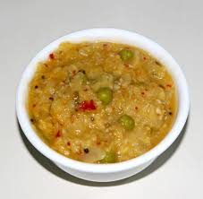

🍛 Kottu Roti Recipe

Ingredients
- 2 parottas or rotis, torn into small pieces
- 1/2 cup chopped onions
- 1/2 cup chopped tomatoes
- 1/2 cup mixed vegetables (carrot, beans, peas)
- 2 eggs (optional)
- 1 tsp ginger garlic paste
- 1/2 tsp turmeric powder
- 1/2 tsp red chili powder
- 1/2 tsp garam masala
- Salt to taste
- 2 tbsp oil
- Fresh coriander for garnish
Instructions
- Heat oil in a pan and sauté onions until translucent.
- Add ginger garlic paste and fry for a minute.
- Add tomatoes and cook until soft.
- Mix in vegetables and cook until tender.
- Add spices and salt, stir well.
- Add eggs if using, scramble them into the mix.
- Add parotta pieces and mix well to coat with masala.
- Cook for a few minutes, garnish with coriander, and serve hot.
🔥 Tip: Use leftover parottas or chapatis for the best texture.